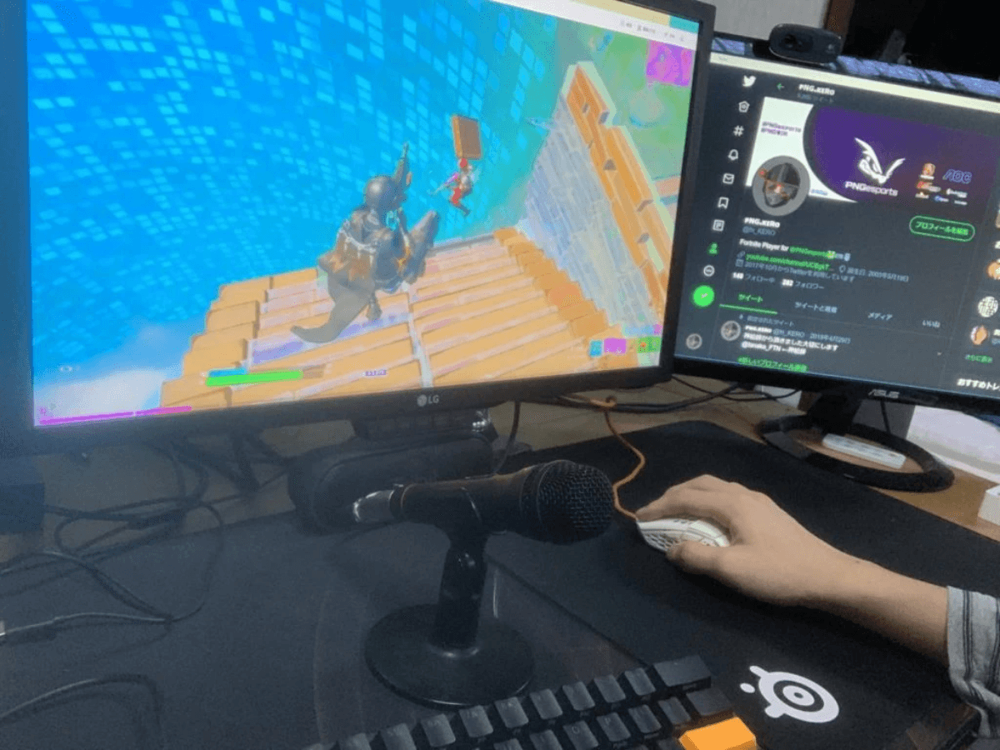
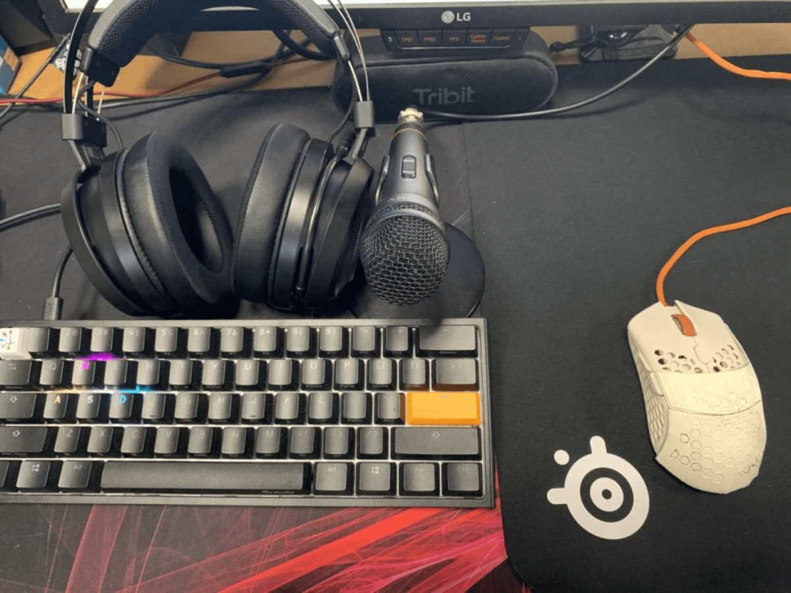

今回はFortnite部門に先日加入したばかりのKero選手にインタビューを行いました。年が近いからこその質問をたくさんしてみましたのでお楽しみに！
PNG esportsからプロの世界へ
-まずは簡単な自己紹介をお願いいたします。
2020年度で17歳になるKeroです、先日Fortnite部門でPNG esportsに加入しました。Fortnite以外ではメジャーなFPSゲームを広くやっています。
– 何故プロになろうと思ったんですか？
Fortniteはサービス始めた当初からやっていて、自分の実力に自信がついてきたのでプロを目指してみようと思いました。好きな事を仕事にできるというのは魅力的でしたね。
– 数あるチームの中からPNGを選んだのは何故ですか？
Fortniteは基本チームスポーツなので自分一人ではどうしようもない部分もあるんですけど、最初にTwitterで募集を見た時にこのチームなら強い人が集まりそうだなと思いました、そこが一番大きい要素でしたね。
– 実際に入ってみてPNGの良いと思った点はありますか？
毎週チームの中で定例会というものをやるんですけど、その中で一人づつ選手やスタッフが近況報告をするんですよね、違う部門の選手やスタッフの事も知れますしその雰囲気が好きですね。

学業・バイト・プロ選手の三点両立
– 今17歳とのことですが学業とプロ選手の両立はどういった点で大変ですか？
学校までが少し離れていて行き帰りに時間がかかる事や、実はバイトもやっているので出たい大会に出れなかったり、試合開始直前に帰宅して十分に準備できなかったりといった所は結構苦労したポイントですね。
– そうすると練習時間なんかも結構限られてくるんじゃないですか？
開いた時間は結構ゲームに当てていますね。その中で1日30分はクリエイティブモードを使って建築の練習なんかをしています。その日ごとに目標を設定して集中が切れた時はやらないなど工夫をしています。
※クリエイティブモード：通常のモードではオンラインで複数のプレイヤーと対戦するが、このモードでは一人又は招待した選手のみかつ資材等が無制限の部屋で練習をすることができる。
– 最初にプロゲーマーになると伝えた時の周囲の反応はどうでしたか？
母親は勉強に差し支えのない程度にね、としか言われませんでした。ただ周りの友人には結構驚かれましたね（笑）
新しい時代を築くKero流のプロ論
– プロになって気をつけていることはなんですか？
SNS上での暴言などには気を使っています。また配信等で舌打ちをすることもチームで禁止されていますね
– そんなに細かく決まってるんですか！？
はい（笑）。他にはFortnite内にはエモートと呼ばれるものがあるんですけど、それも相手に煽りと捉えられてしまう可能性があるので控えるようにしています。
– 同じゲームをやり続けていると飽きてしまう事もあるかと思いますがゲームを長く続けるコツのようなものはありますか？
行き詰まったり飽きてしまった時は距離を置くのが一番だと思います。本当に好きなゲームだったら時間が経てばやりたくなって結局やることになるので特にこれといった対策はないです（笑）。ただYoutubeやTwitter上で上手い人の動画を見ることでモチベーションを上げることは結構ありますね。
– Fortniteって複数人でプレーすることが多いと思うんですけどチームとして何か気を付けていることってありますか？
基本的にはバラバラにならず固まって行動する事で、なるべく数的有利を確保した状態で戦闘に臨む事を心がけています。後は誰がどの敵を狙うのかを的確に情報交換するようにしています。
– Kero選手の中で理想のプロ選手像のようなものはありますか？
海外の選手の立ち回りは特に参考にしています。また、海外の選手は自分から見て結構楽しそうにやってるように見えるんですよね、試合中の喋る回数も多いですし。だから具体的な選手というよりは海外で活躍している選手は一つの目標ですね。
– 使われている機器にこだわりはありますか？
あります！例えばマウスは軽い物が好きです。この間ワイヤレスのマウスを買ったんですけど残念ながら今の状態だと届くのが遅れてしまいそうですね…
– ワイヤレスだとラグがあったりしないんですか？
最近のマウスはそういうのは全然ないですね。他にはスポンサーのふもっふさんの機器なんかも使っています。とても使いやすいですね。
– Fortniteは使用するキーが多いと思うんですけど何かキー配置で工夫していることはありますか？
例えば壁の建築ボタンと編集ボタンは連続して押す機会が多いので同じ指で押さないようにする工夫をしています。

はい。ということで第一弾は高校生プロゲーマーのKero選手でした！機器の質問をした時にすごい声のトーンが上がっていて、すごく拘っているんだなという印象を受けました！次回もお楽しみに〜
記事作成者紹介
noma / 野間口陸人
2002年生まれの現高校3年生(2020年4月時)。小学5年生くらいの頃からMinecraft上でのオンライン対戦ゲームにハマり、以後はcsgoを中心にFortniteやapex、r6s等を幅広くプレー。現在は観客が楽しいesportsをテーマに記事を書くなどの活動している。